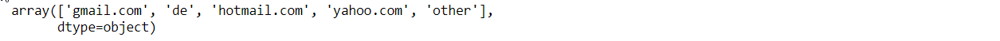

Mini EDA (exploratory data analysis) of an e-commerce customer behavior
The idea is to play around a little bit with Python/Pandas and perform a basic EDA for an ecommerce store. The focus will be on customer behavior, as I find it is often more fun than the usual business KPIs. What can be seen from a simple order history, which would be something, that every ecommerce platform has stored. In this case the data was randomly generated.
Examining the first few rows to get a feel:
import pandas as pd
# load data for 2018
yr = 2018
df = pd.read_csv(datapath+r'\{}_dt-obf.csv'.format(yr), delimiter=',')
df.head(5)

Data was already cleared of null/missing values and some unneeded columns were dropped.
df[df.isnull().any(axis=1)].shape[0] == 0
| Columns | Description |
|---|---|
| date | date and time of the transaction |
| customer | cart value |
| items | number of items |
| price | price of individual item |
| category | category of items |
| pay_method | method of payment |
| customer | customer id |
| domain | domain extracted from customer's email |
| registered | customer registration date |
Each product belongs to one of the 10 categories:
df['category'].unique()
The domain column has been prepared in advance by mapping customer's email address to one of four categories:
df['domain'].unique()

df.describe().round(2)
No negative or zero values, majority of cart values fall under 313€.
First look at product categories
One of the first things to ask, if we sell diverse products, is which categories are the most popular among customers:
g = df.groupby('category').agg({'cart': ['count','sum'], 'items': 'sum', 'price': 'mean'})
g.sort_values(by=('cart','sum'), ascending=False)
It seems that the watches and clothing are two most important categories in terms of revenue for this store. Let's look at the share that each of the categories brings. I will add two more columns, the share of total revenue and for better clarity, also the cumulative sum of the total revenue share:
g['cshare']=grouped[('cart','sum')] / df['cart'].sum()
g['chare_cs']=g['cshare'].cumsum()
g

The first two categories together make-up roughly 79% of revenue, and the rest of the 8 categories bring the remaining cca 21% of revenue. As is often the case, the result comes close to the Paretto principle (or 80/20 rule), where cca 80% of effect comes from cca 20% of causes. Now let's see how the orders are distributed among categories:
g = g.sort_values(by=('cart','count'), ascending=False)
g['csharetx']=grouped[('cart','count')] / df['cart'].shape[0]
g['charetx_cs']=g['csharetx'].cumsum()
g
When it comes to counting orders, the story is slightly different and it is the first three categories (clothing, watches and shoes), that roughly comprise 84% of all the orders. Still, clothing and watches remaing on top even when it comes to the number of orders.
It is interesting to play around with different tresholds and see for example, how many categories comprise up to 95% of all the revenue:
treshold = 0.95
g[g['charetx_cs']<=treshold]
Roughly 94% of all the transactions fall in the first 5 categories.
Visualizing orders grouped by categories is much easier than staring into numbers:
import seaborn as sns
import matplotlib.pyplot as plt
def add_subplot(fig, name, fix, fiy, pix, x, data):
ax = fig.add_subplot(fix, fiy, pix)
ax.set_title(name)
sns.barplot(x, data)
fig = plt.figure()
g2 = g.reset_index()
add_subplot(fig, 'orders count', 1, 3, 1, g2['category'], g2[('cart','count')])
add_subplot(fig, 'revenue', 1, 3, 2, g2['category'], g2[('cart','sum')])
add_subplot(fig, 'average price', 1, 3, 3, g2['category'], g2[('price','mean')])
*the full code in python is a little bit longer in order to make it look nicer and is available for download at the end of the article
Now we know what product categories bring in most of revenue and what the distribution looks like. Now let's look if sales and time are correlated in if yes, how.
Time
# add relevant time-related columns:
df['date']=pd.to_datetime(df['date'])
df['dayofweek'] = df.date.dt.dayofweek + 1
df['dayofyear'] = df.date.dt.dayofyear
df['hour'] = df.date.dt.hour
df['year'] = df.date.dt.year
df['month'] = df.date.dt.month
gh = df.groupby('hour').agg({'cart': ('count','sum'), 'price': 'mean'}).reset_index()
gw = df.groupby('dayofweek').agg({'cart': ('count','sum'), 'price': 'mean'}).reset_index()
gm = df.groupby('month').agg({'cart': ('count','sum'), 'price': 'mean'}).reset_index()
import calendar
def add_subplot(fig, name, fix, fiy, pix, data):
ax = fig.add_subplot(fix, fiy, pix)
ax.set_title(name)
if(data.shape[0]>12):
sns.barplot(data['hour'], data[('cart','sum')])
ax.set_xticklabels(['{}h'.format(x) for x in range(0,24,1)], rotation=30, fontsize='xx-small')
elif(data.shape[0]>7):
sns.barplot(data['month'], data[('cart','sum')])
ax.set_xticklabels([calendar.month_abbr[x] for x in range(1,13,1)], rotation=30, fontsize='small')
else:
sns.barplot(data['dayofweek'], data[('cart','sum')])
ax.set_xticklabels([calendar.day_abbr[x-1] for x in range(1,8,1)], rotation=30, fontsize='small')
fig = plt.figure()
add_subplot(fig, 'sales by hour of the day', 1, 3, 1, gh)
add_subplot(fig, 'sales by day of the week', 1, 3, 2, gw)
add_subplot(fig, 'sales by month', 1, 3, 3, gm)
Nice patterns in customer behavior can be observed from these visualizations. In terms of hours of the day, sale starts peeking after 11-12am, then gradually slows down towards the evening and eventually pretty much stops after 1am at night. Two of the weekdays, Sunday and Monday, seem to be for some reason unpopular among customers and on which sales slows down. In terms of seasonality, clear differences between months can be observed. December and january are the two strongest months, whereas april and september are two of the weakest.
Does popularity of different product categories depend on time?
How much do individual categories differ, when it comes to hours, days or months, in which sales are highest?
# same thing but this time also grouped by categories
gh = df.groupby(['category','hour']).agg({'cart': ('count','sum'), 'price': 'mean'}).reset_index()
gw = df.groupby(['category','dayofweek']).agg({'cart': ('count','sum'), 'price': 'mean'}).reset_index()
gm = df.groupby(['category','month']).agg({'cart': ('count','sum'), 'price': 'mean'}).reset_index()
def add_subplot(fig, key, fix, fiy, pix, data):
ax = fig.add_subplot(fix, fiy, pix)
sns.barplot(data[key], data[('cart','sum')])
for c in gh['category'].unique():
fig = plt.figure()
add_subplot(fig, 'hour', 1, 3, 1, gh[gh['category']==c])
add_subplot(fig, 'dayofweek', 1, 3, 2, gw[gw['category']==c])
add_subplot(fig, 'month', 1, 3, 3, gm[gm['category']==c])
*showing here only relevant lines, actual code is longer to style the plots
When it comes to hours of the day and days of the week, there isn't much diffence among categories. There are peak hours in the afternoon and then sales stops during the night no matter what kind of product. However, as expected, some categories are highly seasonal, while others aren't that much, as some products will be much more popular in only certain times of the year.
Comparing top sales hours between categories with a heatmap
Are there any differences in most popular hours between different categories? Crosstab will automatically compute order frequencies for each hour of day for each of the categories. (Categories are unequal in terms of sales, this is why normalization is applied in order to be able to compare them)
mch = pd.crosstab(df['category'], df['hour'])
#normalize categories so we can compare peak hours of unequal categories
mch = mch.apply(lambda x: (x-min(x))/(max(x)-min(x)), axis=1)
def add_subplot(fig, name, fix, fiy, pix, data):
ax = fig.add_subplot(fix, fiy, pix)
sns.heatmap(data, cmap=sns.light_palette("blue", as_cmap=True))
plt.style.use('default')
sns.set_style("whitegrid")
fig = plt.figure()
add_subplot(fig, 'top hours for each category', 3, 1, 1, mch)
Just playing around a bit with the heatmap, I find it a cleaner look, if the number of colours on the heatmap is reduced by grouping frequencies into bins. I am sure there is a more elegant way of achieving this, but I just did this manually:
# normalize dataset and introduce bins:
def nri(df, reduce_intervals=-1):
lf = lf.apply(lambda x: (x-min(x))/(max(x)-min(x)), axis=1)
if(reduce_intervals > 0):
lf = lf.apply(lambda x: pd.cut(x, bins=reduce_intervals, labels=range(1, reduce_intervals + 1,1)), axis=1)
return lf
# choose the number of intervals to display:
intv = 4
mch = nri(pd.crosstab(df['category'], df['hour']), intv)
Having a smaller number of colors results in a cleaner heatmap and peak hours are easier to distinguish:
We can do the same for the days of the week and months, it follows the same pattern. A practical thing I find with the crosstab function, is the same ability as with the group by to specify the aggregation function and column. For example, visualuzing an average price of an item for each hour of the day would look like this:
mch = pd.crosstab(df['category'], df['hour'], values=df['price'], aggfunc='mean')
Can customers' email addresses tell us anything?
I don't expect much interesting data from email addresses, but let's look at it anyway. Before I started, all the emails were categorized by the domain, to which they belong into four groups:
def extract_domain(email):
domain = email.lower().split("@")[1]
if(domain in ['gmail.com','yahoo.com','hotmail.com']):
return domain
elif(domain.endswith('.de')):
return 'local'
else:
return 'other'
df.groupby('domain').agg({'cart': ('count','sum'), 'price': 'mean', 'items':'mean'})
A few interesting facts nonetheless become obvious:
Most of the customers use gmail and local german domain email addresses, however there are some noticable differences between these groupings:
Customers coming from local de domain purchase on average 14.5% cheaper products than customers coming from gmail.com, one possible reason for this could be purchasing from a personal account vs purchasing from your office account (usually a local domain).
There is also a difference in their favorite hours between customers coming from local domains and customers coming from the rest:
#what about email domains vs hours of the day
cutoffhour = 6
eg = pd.crosstab(df['hour'], df['domain']).apply(lambda x: (x-min(x))/(max(x)-min(x)), axis=0).iloc[cutoffhour:]
fig = plt.figure()
fig.add_subplot(1, 1, 1)
sns.heatmap(eg)
*like previously only important lines shown, the rest is available for download in my github
Interestingly, customers coming from local domains start purchasing slightly earlier and are much less active later in the day (probably work related email addresses).
Fun with animations
Since it sounds fun, for the end, I would like to animate the heatmap of sales per hour, making each day of the year a separate frame:
from matplotlib.animation import FuncAnimation
def update(day):
plt.clf()
d=df[df['dayofyear']==day]
d=pd.crosstab(d['hour'], d['domain'], values='cart', aggfunc='count').fillna(0).iloc[4:20].apply(lambda x: (x-min(x))/(max(x)-min(x)), axis=0)
ax = sns.heatmap(d, center=0.7)
return ax
fig = plt.figure()
anim = FuncAnimation(fig, update, frames=range(1,50,1), interval=70, repeat=True)
anim.save('ploty6.gif', dpi=800, writer='imagemagick')

Well, not very much added value in this case, but it's nice to see how simple it is.
Conclusion
Although this was a super short dive into data analysis, I must say, that coming from the world of web development and relational databases, I am amazed at how simple and efficient python/pandas is when it comes to wrangling, transforming and visualizing data.
That's all!
~